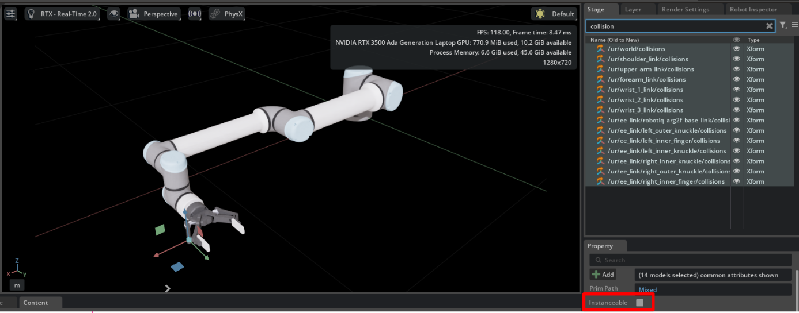
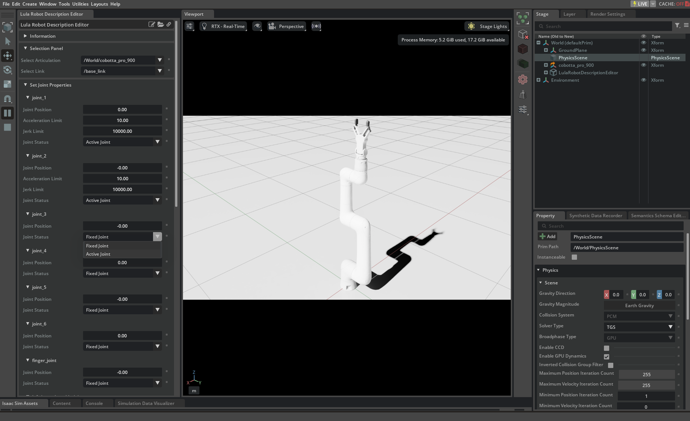
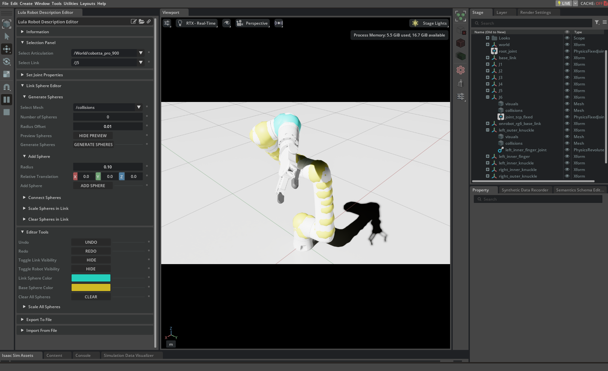

Lula Robot Description and XRDF Editor#
Deprecated
For new development, consider using the newer Robot Motion (Experimental) API, which provides improved interfaces and additional features over Lula.
Learning Objectives#
This tutorial shows how to use the Robot Description Editor UI tool to generate a configuration file that supplements the information available about a robot in its URDF. Two motion generation packages leverage the Robot Description Editor to specify necessary configuration information:
Lula
This tutorial describes the motivation for needing specific config files for Lula and cuMotion algorithms, and goes over the minimal set of data that needs to be written into a robot description file for each available Lula algorithm.
This tutorial then shows how to use the Robot Description Editor UI tool to automatically write the appropriate information into (or edit) a robot_description.yaml file for Lula or an
XRDF file for cuMotion.
The Robot Description Editor is used on a stage that already has an Articulation on it. To follow along with the steps in the tutorial, it is best to open a single asset by reference. That is, drag and drop a USD file onto an empty stage rather than clicking on the USD file to open it directly.
What is in a Robot Description File?#
A robot description file is the main configuration file that is required along with the robot URDF to use all Lula algorithms. Creating a robot_description.yaml file is the first and most time-consuming step that a user must take when hoping to use Lula algorithms on a new robot.
Defining the Robot C-Space: Active and Fixed Joints#
A key aspect of a robot description file is defining the robot c-space. For example, suppose we have a seven DOF robot manipulator such as the Franka arm with an attached two DOF gripper. In the robot URDF file, there are a total of nine non-fixed joints that could be considered controllable. However, the set of Lula algorithms (RMPflow, Lula RRT, Lula Trajectory Generator) are designed to move the robot into position but not to control the end effector. In a typical use case, you might use RmpFlow to move the robot end effector into position above a block and then separately open and close the gripper.
A robot description file must distinguish each joint as:
Active Joint
Fixed Joint
Anything marked as an Active Joint will be directly controlled, while anything marked as a Fixed Joint will be assumed to be fixed from the perspective of Lula algorithms. In the case of using RmpFlow on the Franka robot, the seven joints in the Franka’s arm are marked as Active Joints, and the gripper joints are marked as Fixed Joints.
In the Robot Description Editor, positions must be selected for both active and fixed joints. The positions of Fixed Joints are taken to be default positions. When RmpFlow is not given any target, it will move the robot towards the default position. And when it is given a target, it will use the default positions of the Fixed Joints to resolve null-space behavior; that is, there are many ways for a seven DOF robot to reach a single target, and RmpFlow will be biased towards a c-space position that is close to the default position.
There is no way of telling RmpFlow that the Fixed Joints are in any other position than the position written into the robot description file, and as such it is important to choose a reasonable value for the positions of fixed joints. In the Franka example, the gripper joint positions are given a fixed value corresponding to the gripper being open, as this best facilitates RmpFlow avoiding collisions between the gripper and obstacles no matter the gripper state (when closed, the gripper fingers are inside the convex hull of an open gripper).
Collision Spheres#
Lula algorithms use a custom configuration to perform efficient collision avoidance. For a given robot, a set of collision spheres must be defined that roughly cover the surface of the robot. Lula algorithms will not allow any collision sphere defined in the robot description file to intersect any obstacle in the USD world. The Robot Description Editor provides multiple tools that allow you to quickly define a complete set of collision spheres for any robot.
What is the Difference between a Robot Description File and an XRDF file?#
An XRDF file is the main configuration file that is required by cuMotion for a specific robot, and it contains a superset of the data in a Lula Robot Description File. The Robot Description Editor can be used to generate an XRDF file that contains the minimal data required to start using cuMotion. The use of the Robot Description Editor need not change in any way when configuring a robot for use with cuMotion versus Lula. In the future, Lula will fully support XRDF files and deprecate Robot Description Files.
As of Isaac Sim 4.0.0, the Robot Description Editor was modified to support XRDF files and some parts of this tutorial reference UI components that have changed.
What Information is Required for Each Lula Algorithm?#
Different Lula algorithms require different levels of completion of the robot description file. Every algorithm requires you to appropriately choose active and fixed joints. However, collision spheres are only necessary to configure when using algorithms that perform collision avoidance with external obstacles. For example, the Lula Kinematics Solver is purely kinematic, and it does not interact with the outside world. As such, the collision sphere representation can be omitted from the robot description file. RMPflow can function without any collision spheres being defined, but it will not be able to avoid obstacles.
Using the Robot Description Editor#
This section of the tutorial includes brief text descriptions of the different panels in the Robot Description Editor UI tool. A more step-by-step tutorial can be found in the Generate Robot Description Files and Collision Spheres tutorial.
Note
The Robot Description Editor is not compatible with Instanceable Assets, but a robot description file generated for an asset that was later converted to an instanceable asset will still work on the instanceable asset.
To use the Robot Description Editor, ensure that the Instanceable checkbox is unchecked for all geometry prims in the robot’s hierarchy. This setting can be found in the Property panel when a geometry prim is selected.

The Instanceable checkbox (highlighted in red) should be unchecked for all geometry prims when using the Robot Description Editor.#
Getting Started#
The Robot Description Editor can be found from the tool bar under Tools > Robotics > Lula Robot Description Editor. To get started, open the USD file of your chosen robot and click the Play button on the left-hand side.
In the Selection Panel, after a robot is on the stage and the stage is playing, a drop-down menu will populate where your robot can be selected. Select the prim path of your robot Articulation from the Select Articulation field. After this is done, another drop-down labeled Select Link will populate with the names of each link in our robot. This will be needed later as we use the tool.
We have done everything we need to do to start making our robot description file. Other panels will populate with robot-specific information, and we can move on to the Set Joint Properties.

Set Joint Properties#
As of Isaac Sim 4.0.0, Command Panel was renamed to Set Joint Properties, and fields were added to each joint for jerk and acceleration limits.
After the robot Articulation has been selected from the Select Articulation menu, the Set Joint Properties will expand and populate. The Set Joint Properties requires you to supply critical information for the robot description file to be properly generated. You can refer to Defining the Robot C-Space: Active and Fixed Joints for details.
In the Set Joint Properties select a Joint Position and a Joint Status for each joint in the robot Articulation. Keep in mind the following:
Joints are marked as Fixed Joints if and only if you intend for that joint to be directly controlled by Lula algorithms. Typically this involves marking each joint in the robot arm as active while leaving the joints in the manipulator attached to the arm as Fixed Joints. At least one joint must be marked as an `Active Joint`.
The joint positions of Fixed Joints can matter, depending on the use case and are worth some thought. The positions of Fixed Joints will be assumed by Lula to be truly fixed; that is, there is no way override the positions at runtime.
The positions of Fixed Joints are considered to be the default configuration of the robot. This default configuration is used by a subset of Lula algorithms, with the main case being
RmpFlow. A default configuration should be chosen that is in front of the robot (along the +X axis by convention in Isaac Sim) and is not near any joint limits.
Adding Collision Spheres#
Collision spheres are added to the robot one link at a time. You can select the link of interest from the “Select Link” field of the Selection Panel. The Link Sphere Editor panel contains functions that are within the scope of the selected link such as adding spheres, scaling spheres, and clearing spheres only within the link. The Editor Tools panel contains functions that are outside the scope of the selected link such as Undo and Redo buttons, changing the color of collision spheres, and toggling the visibility of the robot.
When spheres are added to a link, they are added to the USD stage as a prim that is nested under the selected link. You can click on and modify any sphere by moving it around on the stage or changing its radius. The position of a sphere relative to the origin of the link that contains it is written as a fixed value into the robot description file.
There are three main ways to add a sphere to a link:
Add Sphere: Add a single sphere with a specified relative translation from the origin of the link. This translation can be easily changed after creation by modifying the sphere prim.
Connect Spheres: Select two spheres that have already been created under a link and connect them with a specified number of spheres in between. The locations and sizes of the connecting spheres are interpolated to best fill the volume of the cone-section defined by the two spheres being connected.
Generate Spheres: Select a mesh that defines the volume of the link, and automatically generate a set of N spheres that best fill the volume of the mesh. When a number of generated spheres is specified, a preview of the generated spheres will automatically appear, which can be finalized by clicking the “Generate Spheres” button. Any visible robot must will at least one mesh defining its link. When there are more than one mesh, it is best to try each of them to figure out the minimal set of spheres that can be generated for good coverage. It is typically better to “Connect Spheres” by hand for links with simple cylindrical shapes. This utility is not guaranteed to work for all meshes. It only works for water-tight triangle meshes. If the automatic generator doesn’t work for a link, add the spheres and connect them to the links by hand.

Exporting Configuration Files#
Lula Robot Description File#
After completing the Set Joint Properties and creating a collision sphere representation of the robot, the robot description file can be exported under
Export To File > Export to Lula Robot Description File.
A file path to your local machine must be selected with a file name ending in .yaml.
The Save button will become enabled when a valid file path has been typed.
XRDF File#
After completing the Set Joint Properties and creating a collision sphere representation of the robot, an XRDF
file can be generated under Export to File > Export to cuMotion XRDF. The file path must end in .yaml or .xrdf.
The Save button will become enabled when a valid file path has been typed.
A version dropdown allows you to select XRDF format version 1.0 or 2.0 (version 1.0 uses collision, version 2.0 uses world_collision).
When exporting an XRDF file, the Robot Description Editor has the following behavior:
Create a single collision group that is used for both the collision group (
collisionin version 1.0,world_collisionin version 2.0) andself_collisionthat uses the spheres created in the editor.Under
self_collision, set each link to ignore both its parent and other links that have the same parent.Do not write Tool Frames.
Do not write Modifiers.
Because XRDF files can contain more information than is represented in the Robot Description Editor, it is possible to merge the data in the Robot Description Editor with an existing XRDF file. By selecting a file path to an XRDF file that already exists, an option will appear to Merge With Existing XRDF. When merging with an existing XRDF file, the Robot Description Editor has the following behavior:
Copy Tool Frames from the existing file.
Copy Modifiers from the existing file.
Copy self_collision > ignore from the existing file if self_collision > geometry matches the collision group geometry (
collision > geometryin version 1.0,world_collision > geometryin version 2.0).Copy collision spheres from the existing file for any frames that were not represented in the Robot Description Editor.
Importing Configuration Files#
Lula Robot Description File#
A pre-existing robot description file can be imported into the editor under Import From File > Import Lula Robot Description File. Importing will overwrite all information in the Robot Description Editor.
XRDF File#
A pre-existing XRDF file can be imported under Import From File > Import XRDF File. The Robot Description Editor imports XRDF files with the following behavior:
Both format version 1.0 and 2.0 are supported (version 1.0 uses
collision, version 2.0 usesworld_collision).Only the collision group spheres are imported.
Modifiers are not used.
Tool Frames are not used.
The
self_collisiongroup is not used.
Importing will overwrite all information in the Robot Description Editor.
Summary#
This tutorial shows how to use the Lula Robot Description Editor to efficiently generate a Lula robot description file. This covers most of the configuration information required for different Lula algorithms.
The Robot Description Editor also supports XRDF files for use with cuMotion.
Further Learning#
To get the robot moving around with Lula algorithms, review the following tutorials: